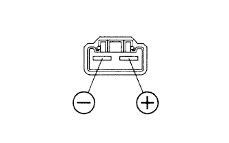

Fuel pump ASSY single inspection |
| 1. Fuel pump ASSY inspection |
Resistance inspection
|  |
Use SST (Toyota Electrical Tester) to measure resistance between terminals.
Operation inspection
Put the battery voltage between the terminals and confirm that the motor rotates.